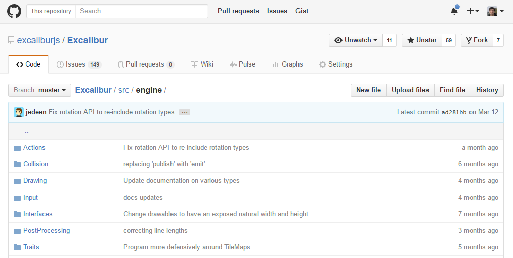

Yes, that's me with a monkey...

TypeScript is a typed superset of Javascript that compiles into plain, idiomatic Javascript
I covered that already in my previous talk,
TypeScript Demystified
Cross-platform. Easy, simple, extensible, multiple language support, debugging, etc.
Windows-only. More metal, cross-platform SDKs, etc.
Follow me on Twitter @kamranayub or
read my musings on kamranicus.com